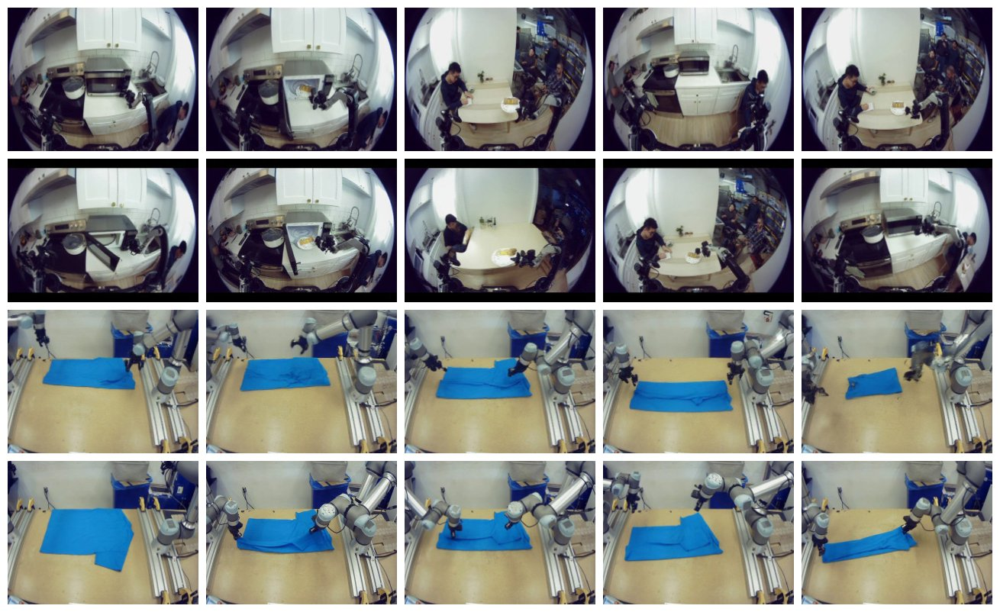

PAPER WALKTHROUGH · 论文图解 · 系列第 7 篇 · 最新
π0.7：会听指挥的通才，
和它的涌现能力
一个模型、零微调：做浓缩咖啡追平 RL 特训的 π*0.6，在没见过的厨房听懂连环指令，把技能零样本搬到没练过的机器人身上，还能被人「口头调教」学会新活。秘诀只有一个：把提示词做厚——不只说做什么，还说怎么做。
Physical Intelligence·pi.website/pi07 · 2025-26·5B = 4B VLM + MEM 视频编码 + 860M 动作专家

论文原图 · Fig 5（照片组）—— 两个代表性评测：厨房长程任务「把微波炉里的食物端上桌」（上）与跨本体双臂叠衣（下，该机器人从没采过叠衣数据）。
{{ hero }}
第 00 章 · TL;DR
十秒版：从「说做什么」到「说怎么做」
π*0.6 证明了 RL 能练出专家，但一次只练一个任务。π0.7 问：能不能一个通才模型直接达到专家水平？答案藏在提示词里——训练时给每条数据贴上「这是谁做的、做得多快、质量几分、有没有失误」，模型就学会了按这些条件切换水平。推理时点「质量 5 分、无失误」，专家就出场了。
主张 ①
可操控 = 白吃杂数据
带元数据标签后，失败演示、旧模型的评测数据（含 π*0.6 的 RL 数据）统统能进训练集——数据越杂越涨，去掉标签则越杂越跌。
主张 ②
世界模型进了提示词
一个 14B 图像编辑模型（BAGEL）实时生成「接下来该长什么样」的子目标图——语言说不清的细节，一张图讲明白。动作预测降维成逆动力学。
主张 ③
能力开始「涌现」
零样本跨本体迁移、组合出没练过的新任务、被口头调教学新活——都不是设计目标，是规模 + 多样性 + 厚提示词的副产品。
第 01 章 · THE PROMPT ★ 论文核心
提示词的四种配料
π0.5 的提示词只有任务 + 子任务两层文字。π0.7 把上下文 Ct 扩成四种模态，训练时每种随机丢弃——所以推理时任意子集都能用。亲手配一条提示词：
{{ prompt }}
小结
▸ 子任务文字（继承 π0.5）说「意图」；子目标图说「样子」；元数据说「水准」；控制模式说「用哪套关节语言」
▸ 元数据 = 速度（500 步一档）+ 质量（1–5 分）+ 失误（真/假），人工粗标
▸ 随机丢弃 → 同一模型身兼「带条件/无条件」，CFG 可对元数据加压（同 π*0.6 的招）
第 02 章 · WORLD MODEL
子目标图：语言说不清的，画给它看
「打开冰箱门」没说明白手该抓哪、门该开多大。π0.7 配了一个轻量世界模型 gψ：输入当前观测 + 子任务 + 元数据，用流匹配生成多视角的近未来图像（基座视角管场景，腕视角管手势）。它从 BAGEL（14B 图像理解/编辑模型）初始化——网页级视觉先验免费入账，真值就是数据段的末帧。
{{ subgoal }}
为什么训练更快了
给了「未来的样子」，动作预测就退化成逆动力学——从两帧之间反推动作。和 WAM 篇（第 ④ 篇）的洞察殊途同归：预测未来是动作学习最好的脚手架。
运行时怎么刷新
子任务一换就重新生成，否则每 4 秒刷新一次；生成在独立线程异步跑，VLA 永远用最新可用的那张——不阻塞 50Hz 控制。
第 03 章 · MODEL & DATA
模型与数据：5B 通才怎么炼
带记忆的眼睛
MEM 式历史视觉编码器：4 路相机 × 6 帧历史（隔 1 秒取一帧），压缩到单帧的 token 量。终于能做「需要记忆」的任务。历史与后视相机各按 30% 概率丢弃训练。
注意力与状态
块因果掩码：观测/子目标图内部双向，文字因果；本体状态不再当文字 token（π0.6 的做法），改线性投影进骨干。动作专家 860M，50 步块，自适应 RMSNorm 注入流匹配时间。
实时动作块 RTC
训练时就模拟「推理延迟下的块衔接」（RTC），5 步去噪出 50 步块、执行 15–25 步就换新块——动作过渡如丝般顺滑。
数据上与经典 VLA 管线决裂：大量使用次优数据——低质量演示、失败集、历届模型的自主评测数据（π*0.6 的 RL 数据也在内，相当于把专家蒸馏回通才）+ 开源数据 + 第一视角人类视频 + 网页多模态 + 视频描述。元数据标签是消化这锅杂烩的胃。
第 04 章 · RUNTIME
运行时：拧到「专家档」
部署时不微调，只拧提示词旋钮。试试下面的控制台——论文的默认配置就是「拉满」：
{{ runtime }}
∇a log π(a|o,C) + β·[ ∇a log π(a|o,C) − ∇a log π(a|o,Cuncond) ]
CFG 加压：对元数据条件与无条件的去噪方向做外推（β>1）——「更像高质量数据」的方向被放大。训练时的随机丢弃使 Cuncond 免费可得
第 05 章 · RESULTS
实验：五个问题
{{ results }}
* 条形为按论文图 6/9/10/18 结论的定性重绘；「追平/超越 RL 专家」「显著超越 π0.5/π0.6」为论文原文结论。
第 06 章 · EMERGENCE
涌现、边界，与整个系列的收束
三种涌现能力（都不是设计目标）
▸ 跨本体零样本：没采过叠衣数据的机器人直接会叠衣，还长出适配自己身体的新策略
▸ 组合泛化：法压壶、盛米饭、擦耳机、转风扇——没人为这些采过数据
▸ 口头调教：人一步步说，它一步步做（气炸锅烤红薯）；调教记录再微调成高层策略 → 从此自主
论文自己承认的边界
▸ 零样本任务成功率 60–80%，仍低于见过任务的 90%+
▸ 数据太大太杂，「见过/没见过」都难界定——和 LLM 一样的泛化审计难题
▸ 下一步：用可操控性 + 口头调教 + 自主 RL 在测试任务上继续学（回到 π*0.6 的循环）
一句话回顾全篇
π0.7 = 5B VLA（4B VLM + MEM 历史视觉 + 860M 动作专家）+ 厚提示词（子任务文字 + 世界模型子目标图 + 速度/质量/失误元数据 + 控制模式，训练时随机丢弃、推理时自由组合）——于是杂数据全能吃、专家水平随叫随到，跨本体迁移与组合泛化开始涌现。π0 造了身体，π0.5 教了泛化，π*0.6 练了精熟，π0.7 学会了听懂「怎么做」。
π 家族全谱系（系列完结）
2024.10
π0
VLM+流匹配骨架 · 预/后训练配方
2025.11
π0.6 / π*0.6
RECAP：从经验中学习
2025-26
π0.7 ★
厚提示词 → 可操控 + 涌现
— 完 · 不只告诉它做什么，告诉它怎么做 —